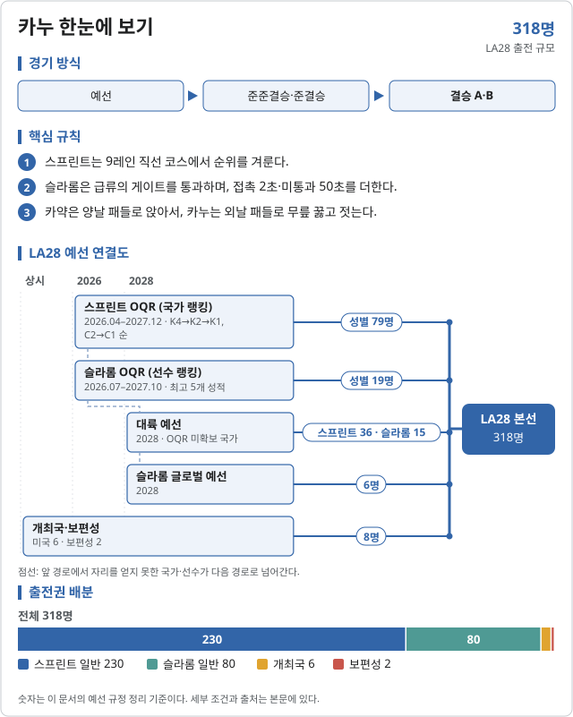
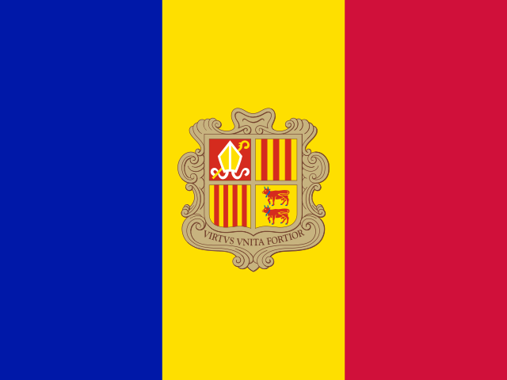

카누 (Canoeing)
2028 LA 올림픽 카누에는 16개 세부종목이 있다.
- 스프린트 남자 C1 1000m · 남자 C2 500m · 남자 K1 1000m · 남자 K2 500m · 남자 K4 500m · 여자 C1 200m · 여자 C2 500m · 여자 K1 500m · 여자 K2 500m · 여자 K4 500m
- 슬라롬 남자 슬라롬 C1 · 남자 슬라롬 K1 · 남자 카약 크로스 · 여자 슬라롬 C1 · 여자 슬라롬 K1 · 여자 카약 크로스

2026 주요 대회 결과 2026-11-07 12:26 KST
위키백과 대회 문서에서 자동으로 모은다. 대회 중에는 한 시간마다 새로 읽는다. 한국 선수가 있는 줄은 붉게 칠했다. 하계 실시간 전체 →
아이치·나고야 아시안게임 아이치·나고야 · 09.19~10.04 종료 결과 18/18종목 · 한국 금2 은2 동0
| 종목 | 금 | 은 | 동 |
|---|---|---|---|
| Slalom | |||
| 남자 C-1 | |||
| 남자 K-1 | |||
| 남자 Kayak cross | |||
| 여자 C-1 | |||
| 여자 K-1 | |||
| 여자 Kayak cross | |||
| 스프린트 | |||
| C-1 500m | |||
| C-2 500m | |||
| K-1 500m | |||
| K-2 500m | Ali Aghamirzaei·Peyman Ghavidel IRN | ||
| K-4 500m | |||
| C-1 200m | |||
| C-2 500m | |||
| K-1 500m | |||
| K-2 500m | |||
| K-4 500m | |||
| C-2 500m | |||
| K-2 500m | |||
메달 순위:  중국 12-4-2 ·
중국 12-4-2 ·  우즈베키스탄 2-6-1 ·
우즈베키스탄 2-6-1 ·  일본 2-2-2 ·
일본 2-2-2 ·  대한민국 2-2-0 ·
대한민국 2-2-0 ·  차이니스 타이베이 0-2-1 ·
차이니스 타이베이 0-2-1 ·  카자흐스탄 0-1-8 ·
카자흐스탄 0-1-8 ·  태국 0-1-1 ·
태국 0-1-1 ·  인도네시아 0-0-1
인도네시아 0-0-1
출처: 위키백과 Canoeing at the 2026 Asian Games · 2026-11-06 22:37 읽음
ICF 카누 스프린트 세계선수권 포즈난 · 08.26~08.30 종료 결과 27/43종목 · 한국 금0 은0 동0
| 종목 | 금 | 은 | 동 |
|---|---|---|---|
| Canoe | |||
| C–1 200m | |||
| C–1 500m | |||
| C–1 1000m | |||
| C–1 5000m | |||
| C–2 500m | |||
| C–4 500m | |||
| Kayak | |||
| K–1 200m | |||
| K–1 500m | |||
| K–1 1000m | |||
| K–1 5000m | |||
| K–2 500m | |||
| K–4 500m | |||
| Canoe | |||
| C–1 200m | |||
| C–1 500m | |||
| C–1 5000m | |||
| C–2 200m | |||
| C–2 500m | |||
| C–4 500m | |||
| Kayak | |||
| K–1 200m | |||
| K–1 500m | |||
| K–1 1000m | |||
| K–1 5000m | |||
| K–2 500m | |||
| K–4 500m | |||
| Events | |||
| 남자 II KT-2 U SO 200m <small> [https://wc26.domtel-sport.pl/pdf/MK2_200j_3_r.pdf details ] </small> | |||
| 남자 II KT-2 SO 200m <small> [https://wc26.domtel-sport.pl/pdf/MK2_200jm_3_r.pdf details ] </small> | |||
| 여자 II KT-2 U SO 200m <small> [https://wc26.domtel-sport.pl/pdf/KK2_200j_3_r.pdf details ] </small> | |||
남은 종목: 남자 KL1, 남자 KL2, 남자 KL3, 남자 VL1, 남자 VL2, 남자 VL3, 여자 KL1, 여자 KL2, 여자 KL3, 여자 VL1, 여자 VL2, 여자 VL3, 남자 II Para KT-1 SO 200m <small> [https://wc26.domtel-sport.pl/pdf/MK1_200j_3_r.pdf details ] </small>, 남자 II KT-1 SO 200m <small> [https://wc26.domtel-sport.pl/pdf/MK1_200jm_3_r.pdf details ] </small>, 여자 II Para KT-1 SO 200m <small> [https://wc26.domtel-sport.pl/pdf/KK1_200j_3_r.pdf details ] </small>, 여자/남자 II KT-1 SO 200m <small> [https://wc26.domtel-sport.pl/pdf/KK1_200jm_3_r.pdf details ] </small>
메달 순위:  독일 5-0-2 ·
독일 5-0-2 ·  헝가리 4-7-1 ·
헝가리 4-7-1 ·  오스트레일리아 2-1-2 ·
오스트레일리아 2-1-2 ·  중국 2-1-2 ·
중국 2-1-2 ·  포르투갈 2-1-1 ·
포르투갈 2-1-1 ·  체코 1-1-3 · AAA 1-1-1 ·
체코 1-1-3 · AAA 1-1-1 ·  캐나다 1-1-1
캐나다 1-1-1
출처: 위키백과 2026 ICF Canoe Sprint World Championships · 2026-11-06 22:37 읽음
ICF 카누 슬랄롬 세계선수권 오클라호마시티 · 07.20~07.25 종료 결과 12/12종목 · 한국 금0 은0 동0
| 종목 | 금 | 은 | 동 |
|---|---|---|---|
| Canoe | |||
| C1 | |||
| C1 단체 | |||
| Kayak | |||
| K1 | |||
| K1 단체 | |||
| Kayak cross | |||
| Kayak cross 개인 | |||
| Canoe | |||
| C1 |  Mònica Dòria 안도라 103.04 | ||
| C1 단체 | |||
| Kayak | |||
| K1 | |||
| K1 단체 | |||
| Kayak cross | |||
| Kayak cross 개인 | |||
메달 순위:  체코 3-3-1 ·
체코 3-3-1 ·  오스트레일리아 3-1-0 ·
오스트레일리아 3-1-0 ·  영국 2-1-3 ·
영국 2-1-3 ·  스위스 1-2-0 ·
스위스 1-2-0 ·  스페인 1-0-2 ·
스페인 1-0-2 ·  슬로바키아 1-0-1 ·
슬로바키아 1-0-1 ·  슬로베니아 1-0-0 ·
슬로베니아 1-0-0 ·  프랑스 0-2-1
프랑스 0-2-1
출처: 위키백과 2026 ICF Canoe Slalom World Championships · 2026-11-06 22:37 읽음
예선 규정
이벤트 및 출전 쿼터
스프린트 10종목과 슬라롬 6종목, 전체 318명이 출전한다. 쿼터는 국가 올림픽위원회(NOC)에 배정된다.
| 디시플린 | 일반쿼터 | 개최국쿼터 | 보편성쿼터 | 합계 |
|---|---|---|---|---|
| 스프린트 | 230 | 4 | — | 234 |
| 슬라롬 | 80 | 2 | — | 82 |
| 보편성 (공통) | — | — | 2 | 2 |
| 합계 | 310 | 6 | 2 | 318 |
스프린트 국가당 성별 카약 5·카누 3명, 종목당 최대 2척. 슬라롬 국가당 종목별 쿼터 1(성별 3).
예선 경로
두 디시플린 모두 올림픽 예선 랭킹(OQR) → 대륙 예선 순이며, 슬라롬은 글로벌 예선이 더 있다.
스프린트 · 남녀 각 5종목
스프린트 선발 경로 (성별 공통)
성별 117명 · 규정 ↗
| 경로 | 쿼터 | 선발 방식 |
|---|---|---|
| (규정 D.3) 올림픽 예선 랭킹 (OQR) | 79명 | [1] |
| (규정 D.4) 대륙 예선 | 36명 | [2] |
| (규정 D.5) 개최국쿼터 | 2명 | [3] |
| (규정 D.6) 보편성쿼터 | 카누 전체 2명 | [4] |
- [1]2026.04.20–2027.12.31 종목별 국가 랭킹. 카약은 K4 → K2 → K1, 카누는 C2 → C1 순으로 배정. 쿼터는 국가에 주어지며 쿼터를 딴 선수와 무관하다.
- [2]OQR에서 그 범주(카약/카누) 쿼터가 없는 국가만. 2028 대륙 예선 대회: 유럽·아메리카·아시아 K1·C1 2명, K2·C2 2척, 아프리카·오세아니아 K1·C1 1명. 선수 1명당 쿼터 1개.
- [3]미국에 남녀 카약·카누 각 1명. 2027 세계선수권 해당 범주 출전 필요.
- [4]스프린트·슬라롬 합쳐 1인승 2명. 스프린트 OQR 등재 필요. IOC 초청 2027.10.01, 신청 마감 2028.01.15.
슬라롬 · 남녀 각 K1·C1·카약 크로스
슬라롬 선발 경로 (성별 공통)
성별 41명 · 규정 ↗
| 경로 | 쿼터 | 선발 방식 |
|---|---|---|
| (1단계) 올림픽 예선 랭킹 (OQR) | 19명 | [1] |
| (2단계) 대륙 예선 | 15명 | [2] |
| (3단계) 글로벌 예선 | 6명 | [3] |
| 개최국쿼터 | 1명 | [4] |
- [1]2026.07.20–2027.10.03 선수별 랭킹(최고 5개 성적). C1 10 · K1 6 · 카약 크로스 3. 2027.10.03 확정.
- [2]2028 5개 대륙 예선에서 종목마다 대륙 1명(3종목 × 5). 같은 범주 OQR 쿼터가 없는 국가만.
- [3]2028 ICF 글로벌 예선에서 종목마다 미확보 상위 2명.
- [4]미국 남녀 K1 또는 카약 크로스 1명씩.
그림으로 보는 스프린트 배정
현재 ICF 순위에 규정을 적용한 국가별 예시와 아시아 대륙 예선 K2 2척 경쟁은 카약 선발 예시에 있습니다.
개최국·보편성 쿼터
개최국 미국은 스프린트 남녀 카약·카누 각 1명, 슬라롬 남녀 1명씩을 보장받는다.
보편성 쿼터는 스프린트·슬라롬 통합 2명이다. IOC 초청 2027.10.01, 신청 마감 2028.01.15.
참가 자격
올림픽 헌장(제41조 국적, 제43조 세계반도핑규약 및 경기 조작 방지 규정), 여성 카테고리 보호에 관한 IOC 정책, IOC 참가 조건 및 ICF 규정을 충족해야 한다. 쿼터는 국가에 배정되며, 쿼터를 딴 선수와 실제 출전 선수가 달라도 된다.
스프린트는 같은 범주(남 카약·남 카누 등) 안에서 여러 종목에 나갈 수 있지만 다른 범주로는 못 간다. 쿼터 수에 따라 최소 출전 종목 수가 정해진다(규정 B.5). 슬라롬 선수는 국가 상한(종목당 2명) 안에서 여러 종목에 나갈 수 있다.
예선 일정
예선 및 대회 일정
2026년에는 스프린트·슬라롬 OQR 포인트가 쌓이고 있다(세계선수권·월드컵·대륙선수권).
| 날짜 | 일정 |
|---|---|
| 2026.04.20 | 스프린트 OQR 기간 시작 |
| 2026.04.24–26 | 아시아 스프린트선수권 허페이 |
| 2026.07.20–25 | 슬라롬 세계선수권 오클라호마시티 · 슬라롬 OQR 시작 |
| 2026.08.26–30 | 스프린트 세계선수권 |
| 2027.08.25–29 | 스프린트 세계선수권 |
| 2027.09.07–12 | 슬라롬 세계선수권 라세우 |
| 2027.10.03 | 슬라롬 OQR 확정 |
| 2027.12.31 | 스프린트 OQR 확정 · 쿼터 배정 |
| 2028 (미정) | 스프린트·슬라롬 대륙 예선 · 슬라롬 글로벌 예선 |
| 2028.06.08 | 스프린트 미사용 쿼터 재배정 |
| 2028.06.26 | LA28 스포츠 엔트리 마감 |
직전 올림픽 메달리스트
2024 파리 올림픽
| 세부종목 | 금 | 은 | 동 |
|---|---|---|---|
| 남자 C1 1000m | Martin Fuksa (CZE) | Isaquias Queiroz (BRA) | Serghei Tarnovschi (MDA) |
| 남자 C2 500m | Liu Hao·Ji Bowen (CHN) | Gabriele Casadei·Carlo Tacchini (ITA) | Joan Antoni Moreno·Diego Domínguez (ESP) |
| 남자 K1 1000m | Josef Dostál (CZE) | Ádám Varga (HUN) | Bálint Kopasz (HUN) |
| 남자 K2 500m | Jacob Schopf·Max Lemke (GER) | Bence Nádas·Sándor Tótka (HUN) | Jean van der Westhuyzen·Thomas Green (AUS) |
| 남자 K4 500m | GER | AUS | ESP |
| 여자 C1 200m | Katie Vincent (CAN) | Nevin Harrison (USA) | Yarisleidis Cirilo (CUB) |
| 여자 C2 500m | Xu Shixiao·Sun Mengya (CHN) | Liudmyla Luzan·Anastasiia Rybachok (UKR) | Sloan MacKenzie·Katie Vincent (CAN) |
| 여자 K1 500m | Lisa Carrington (NZL) | Tamara Csipes (HUN) | Emma Jørgensen (DEN) |
| 여자 K2 500m | Lisa Carrington·Alicia Hoskin (NZL) | Tamara Csipes·Alida Dóra Gazsó (HUN) | Paulina Paszek·Jule Hake (GER) / Noémi Pupp·Sára Fojt (HUN) |
| 여자 K4 500m | NZL | GER | HUN |
| 남자 슬라롬 C1 | Nicolas Gestin (FRA) | Adam Burgess (GBR) | Matej Beňuš (SVK) |
| 남자 슬라롬 K1 | Giovanni De Gennaro (ITA) | Titouan Castryck (FRA) | Pau Echaniz (ESP) |
| 남자 카약 크로스 | Finn Butcher (NZL) | Joe Clarke (GBR) | Noah Hegge (GER) |
| 여자 슬라롬 C1 | Jessica Fox (AUS) | Elena Lilik (GER) | Evy Leibfarth (USA) |
| 여자 슬라롬 K1 | Jessica Fox (AUS) | Klaudia Zwolińska (POL) | Kimberley Woods (GBR) |
| 여자 카약 크로스 | Noemie Fox (AUS) | Angèle Hug (FRA) | Kimberley Woods (GBR) |
대한민국
한국 출전 전망
2026-10-04 기준 참고현재 성적을 LA28 규정에 단순 적용한 참고치이며 2028 확정 전망이 아님.
인원 범위 미산정 · 남자 카약 K2·K4가 강점
스프린트 OQR은 2027.12.31까지 세계선수권·월드컵·대륙선수권 성적을 쌓는다. 한국 남자 카약은 아시안게임 K2·K4 500m 2관왕으로 아시아 최상위권이다. 아시안게임은 OQR 반영 대회가 아니다.
| 선수·팀 | 공개 성적 | 근거 |
|---|---|---|
| 조광희·김효빈 | 2026 아시안게임 남자 K2 500m 금 (1:31.859) · K4 500m 금 | 연합뉴스 · 2026.09.25 |
| 남자 K2 · K4 500m | 2026 아시아선수권 은 2개 | 아시아선수권 결과 |
OQR: K4 500m는 OQR로만 11척을 뽑아 세계 상위권이어야 한다. K2 500m는 OQR 8명(4척) 또는 아시아 대륙 예선 2척 경로가 있다.
대륙 예선: OQR에서 그 범주 쿼터를 하나도 못 얻은 국가만 나갈 수 있다.
자료 기준: 2026 아시안게임·아시아선수권 카누 결과.
카누 · 올림픽예선 | 규정 확인 2026.10.04 · 한국 전망 기준 2026.10.04
각주
외부 링크
공식 근거
- ICF · LA28 Qualification System, Canoe Sprint (PDF, 2026.05.12)
- ICF · LA28 Qualification System, Canoe Slalom (PDF, 2026.05.12)
- 연합뉴스 · 조광희·김효빈 아시안게임 K2 500m 금 (2026.09.25)
- 2026 아시아 카누 스프린트선수권
규정 확인일: 2026.10.04. IOC가 게시한 ICF 원문 PDF 2종(모두 Version as of 12 May 2026)을 기준으로 정리했다. 슬라롬의 카약 크로스(X1)는 개인 종목이다. 본 문서는 비공식 한국어 요약이며 최종 적용은 ICF 공지를 따른다.